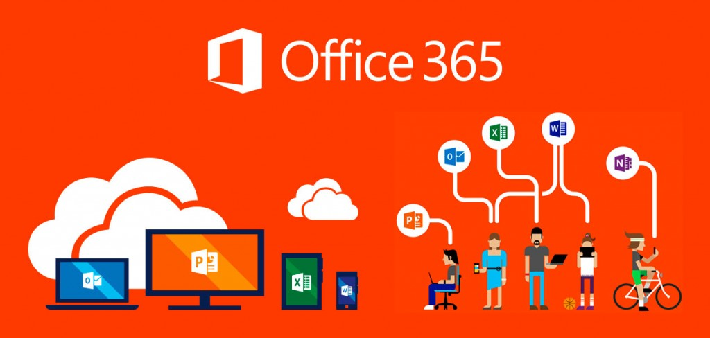

Office 365
Aprendiendo con un clic ✔
Office 365 ¿Qué es y para qué sirve?
La suite ofimática Microsoft Office lleva mucho tiempo entre nosotros. La mayoría de usuarios la usa o ha usado en alguna ocasión. Con el paso del tiempo Office ha ido evolucionado y ha ido adaptandose a lo que los usuarios necesitan.

Se trata de una herramienta que nos permite crear, acceder y compartir documentos y se puede acceder desde cualquier dispositivo que tenga acceso a Internet y OneDrive.
Además de estos programas, abarca una serie de herramientas adicionales. Podemos tener acceso al correo electrónico, mensajería instantánea, videoconferencias, pantallas compartidas, almacenamiento en la nube, calendarios… Por lo que tenemos una gran cantidad de herramientas que nos permiten trabajar con total comodidad.
Por lo general, las aplicaciones de escritorio se pueden usar hasta en cinco dispositivos (en su versión para hogar). Ya sea ordenador, tablet o un smartphone. De esta manera, estés donde estés, vas a tener acceso a tus documentos o a los archivos que se hayan almacenado en la nube, en cuanto al correo tenemos la posibilidad de adjuntar archivos de hasta 25 MB y tenemos protección ante correos spam o maliciosos.
También es importante mencionar que Office 365 se actualiza de forma frecuente. Por lo que de manera habitual nos encontramos con nuevas funciones en el software. Todas ellas nos permiten hacer un uso más eficiente de estas herramientas.
Versiones de Office 365
Dada la naturaleza del producto, que nos permite acceder a los documentos en cualquier momento siempre y cuando tengamos conexión a Internet, es una opción que tiene bastante popularidad en empresas. Ya que permite a trabajadores de diferentes áreas trabajar juntos en proyectos o si hay personas que están de viaje, poder consultar siempre cambios en un documento.
Aunque Office 365 ha ido creciendo con el paso del tiempo y han surgido diversas versiones de este software. En la actualidad tenemos varias versiones para hogar y otras para empresas. De forma que en función de las necesidades se puede elegir la que más conviene.
Dentro de la categoría para hogar, nos encontramos con tres versiones diferentes:
✤Office 365 Hogar
✤Office 365 Personal
✤Office Hogar y Estudiantes PC
Cada una de las opciones ofrece características adicionales, por lo que en función de las necesidades y el uso que le vayamos a dar, hay una opción que nos conviene más.

También hay varias versiones de software para empresas. En función del tamaño de la empresa o el número de personas que vayan a hacer uso de estos servicios nos encontramos con varias opciones.
Estas son las tres opciones:
✤Office 365 Empresa
✤Office 365 Empresa Premium
✤Office 365 Empresa Essentials
Como es lógico, cada versión incluye unas características diferentes. Por lo que depende de lo que la empresa quiera usar, conviene más una versión u otra. Aquí se pueden consultar todas las funciones que ofrecen las diversas versiones, tanto para hogar como para empresa.
Cualquiera de las dos opciones permite tener acceso durante 1 año a estas aplicaciones:
✤Microsoft Word
✤Microsoft Excel
✤Microsoft PowerPoint
✤Microsoft OneNote
✤Microsoft Outlook
✤Microsoft Publisher (sólo para PC)
✤Microsoft Access
Ventajas de Office 365
Se trata de una opción que destaca especialmente por permitir a los usuarios acceder desde cualquier lugar a sus documentos. Algo que da bastante comodidad. Ya que no importa dónde te encuentres, vas a poder tener acceso y trabajar cómodamente. Basta con tener acceso a Internet para poder trabajar en alguno de los programas de la suite de Office 365.
Es una buena opción porque ofrece todos los servicios en un único paquete. De forma que además de los programas para crear documentos, tiene muchas herramientas adicionales. Todo pensado para que el trabajo sea más cómodo. Desde poder hacer videoconferencias a almacenar archivos en la nube. Funciones como estas son de enorme utilidad para todos.